library(tidyverse)
library(tidymodels)
library(knitr)
library(kableExtra)
library(Stat2Data) #empirical logit plots
library(patchwork)
# set default theme in ggplot2
ggplot2::theme_set(ggplot2::theme_bw())Logistic Regression: Assumptions + Estimation
Announcements
HW 04 due TODAY at 11:59pm
Project draft due at beginning of lab tomorrow
- Peer review in lab
Exam 02 - April 17 (same format as Exam 01)
- Exam 02 practice + lecture recordings available
Statistics experience due April 22
Questions from this week’s content?
Topics
Confidence intervals for logistic regression
Conditions for logistic regression
Estimating coefficients for logistic regression model
Computational setup
COVID-19 infection prevention practices at food establishments
Researchers at Wollo University in Ethiopia conducted a study in July and August 2020 to understand factors associated with good COVID-19 infection prevention practices at food establishments. Their study is published in Andualem et al. (2022).
They were particularly interested in the understanding implementation of prevention practices at food establishments, given the workers’ increased risk due to daily contact with customers.
Access to personal protective equipment
We will use the data from Andualem et al. (2022) to explore the association between age, sex, years of service, and whether someone works at a food establishment with access to personal protective equipment (PPE) as of August 2020. We will use access to PPE as a proxy for wearing PPE.
The study participants were selected using a simple random sampling at the selected establishments.
| age | sex | years | ppe_access |
|---|---|---|---|
| 34 | Male | 2 | 1 |
| 32 | Female | 3 | 1 |
| 32 | Female | 1 | 1 |
| 40 | Male | 4 | 1 |
| 32 | Male | 10 | 1 |
Full model results
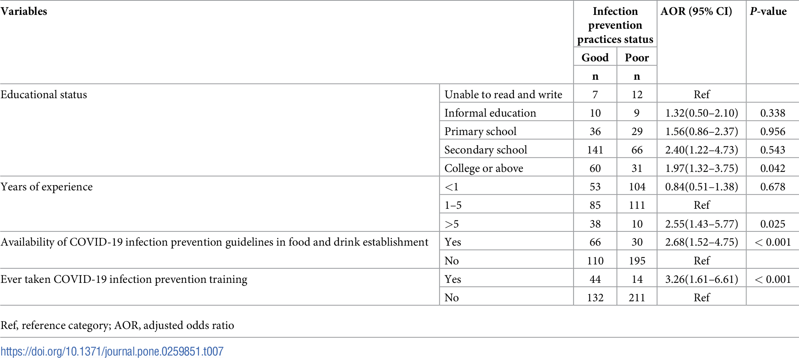
Confidence interval for \(\beta_j\)
We can calculate the C% confidence interval for \(\beta_j\) as the following:
\[ \Large{\hat{\beta}_j \pm z^* \times SE(\hat{\beta}_j)} \]
where \(z^*\) is calculated from the \(N(0,1)\) distribution
. . .
This is an interval for the change in the log-odds for every one unit increase in \(x_j\)
Interpretation in terms of the odds
The change in odds for every one unit increase in \(x_j\).
\[ \Large{\exp\{\hat{\beta}_j \pm z^* \times SE(\hat{\beta}_j)\}} \]
. . .
Interpretation: We are \(C\%\) confident that for every one unit increase in \(x_j\), the odds multiply by a factor of \(\exp\{\hat{\beta}_j - z^* \times SE(\hat{\beta}_j)\}\) to \(\exp\{\hat{\beta}_j + z^* \times SE(\hat{\beta}_j)\}\), holding all else constant.
PPE Access: Interpret CI
Interpret the 95% confidence interval for > 5 years experience in terms of the odds of having access to PPE.
Visualizations
Bivariate EDA: categorical predictor
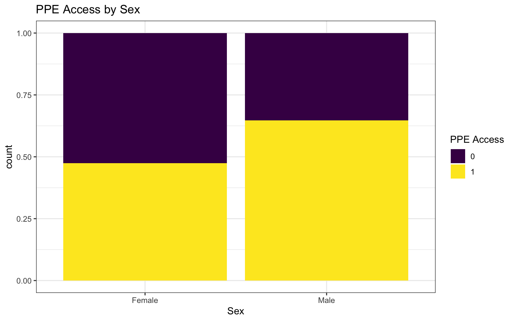
Bivariate EDA: quantitative predictor
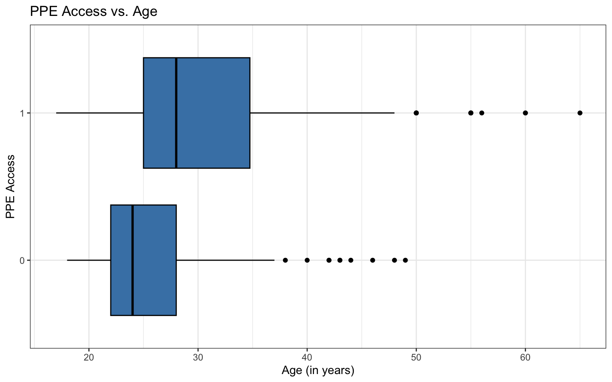
EDA: Potential interaction effect
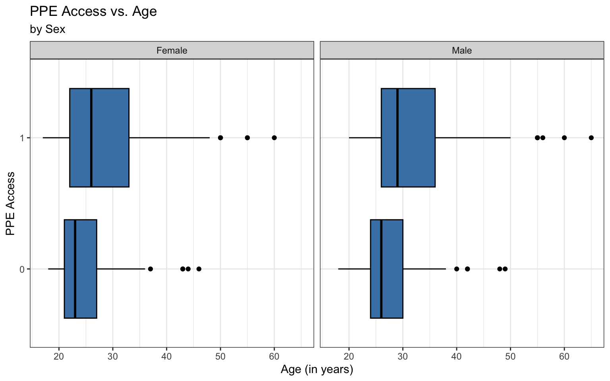
Empirical logit
The empirical logit is the log of the observed odds:
\[ \text{logit}(\hat{p}) = \log\Big(\frac{\hat{p}}{1 - \hat{p}}\Big) = \log\Big(\frac{\# \text{Yes}}{\# \text{No}}\Big) \]
Calculating empirical logit (categorical predictor)
If the predictor is categorical, we can calculate the empirical logit for each level of the predictor.
covid_df |>
count(sex, ppe_access) |>
group_by(sex) |>
mutate(prop = n/sum(n)) |>
mutate(emp_logit = log(prop/(1-prop)))# A tibble: 4 × 5
# Groups: sex [2]
sex ppe_access n prop emp_logit
<fct> <fct> <int> <dbl> <dbl>
1 Female 0 114 0.525 0.101
2 Female 1 103 0.475 -0.101
3 Male 0 65 0.353 -0.605
4 Male 1 119 0.647 0.605Calculating empirical logit (quantitative predictor)
Divide the range of the predictor into intervals with approximately equal number of cases. (If you have enough observations, use 5 - 10 intervals.)
Compute the empirical logit for each interval
. . .
You can then calculate the mean value of the predictor in each interval and create a plot of the empirical logit versus the mean value of the predictor in each interval.
Empirical logit plot in R (quantitative predictor)
Created using dplyr and ggplot functions.
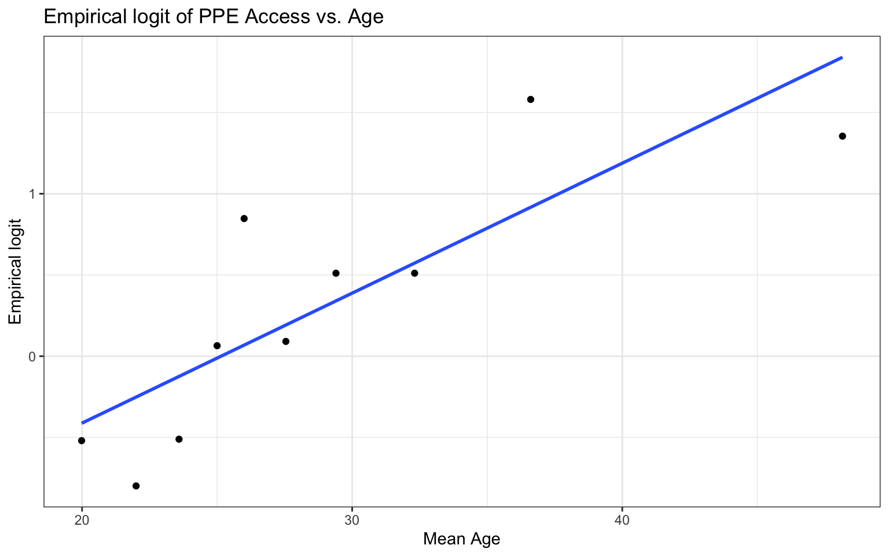
Empirical logit plot in R (quantitative predictor)
Created using dplyr and ggplot functions.
covid_df |>
mutate(age_bin = cut_number(age, n = 10)) |>
group_by(age_bin) |>
mutate(mean_age = mean(age)) |>
count(mean_age, ppe_access) |>
mutate(prop = n/sum(n)) |>
filter(ppe_access == "1") |>
mutate(emp_logit = log(prop/(1-prop))) |>
ggplot(aes(x = mean_age, y = emp_logit)) +
geom_point() +
geom_smooth(method = "lm", se = FALSE) +
labs(x = "Mean Age",
y = "Empirical logit",
title = "Empirical logit of PPE Access vs. Age")Empirical logit plot in R (quantitative predictor)
Using the emplogitplot1 function from the Stat2Data R package
emplogitplot1(ppe_access ~ age, data = covid_df, ngroups = 10)
Empirical logit plot in R (interactions)
Using the emplogitplot2 function from the Stat2Data R package
emplogitplot2(ppe_access ~ age + sex, data = covid_df,
ngroups = 10,
putlegend = "bottomright")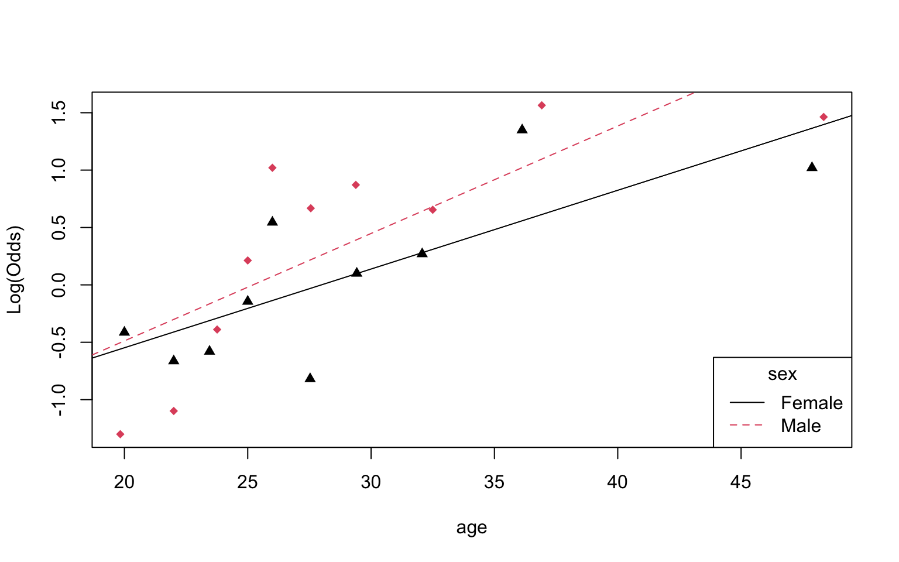
Logistic regression model
ppe_model <- glm(ppe_access ~ age + sex + years,
data = covid_df, family = binomial)
tidy(ppe_model, conf.int = TRUE) |>
kable(digits = 3)| term | estimate | std.error | statistic | p.value | conf.low | conf.high |
|---|---|---|---|---|---|---|
| (Intercept) | -2.127 | 0.458 | -4.641 | 0.000 | -3.058 | -1.257 |
| age | 0.056 | 0.017 | 3.210 | 0.001 | 0.023 | 0.091 |
| sexMale | 0.341 | 0.224 | 1.524 | 0.128 | -0.098 | 0.780 |
| years | 0.264 | 0.066 | 4.010 | 0.000 | 0.143 | 0.401 |
Visualizing coefficient estimates
model_odds_ratios <- tidy(ppe_model, exponentiate = TRUE, conf.int = TRUE)ggplot(data = model_odds_ratios, aes(x = term, y = estimate)) +
geom_point() +
geom_hline(yintercept = 1, lty = 2) +
geom_pointrange(aes(ymin = conf.low, ymax = conf.high))+
labs(title = "Adjusted odds ratios",
x = "",
y = "Estimated AOR") +
coord_flip()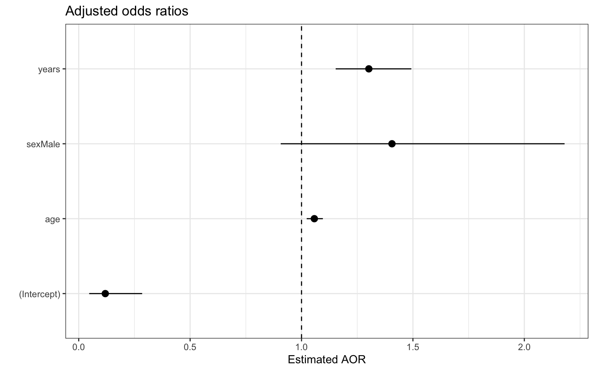
Assumptions for logistic regression
Assumptions for logistic regression
Linearity: The log-odds have a linear relationship with the predictors.
Randomness: The data were obtained from a random process
Independence: The observations are independent from one another.
Checking linearity
Check the empirical logit plots for the quantitative predictors
emplogitplot1(ppe_access ~ age, data = covid_df,
ngroups = 10)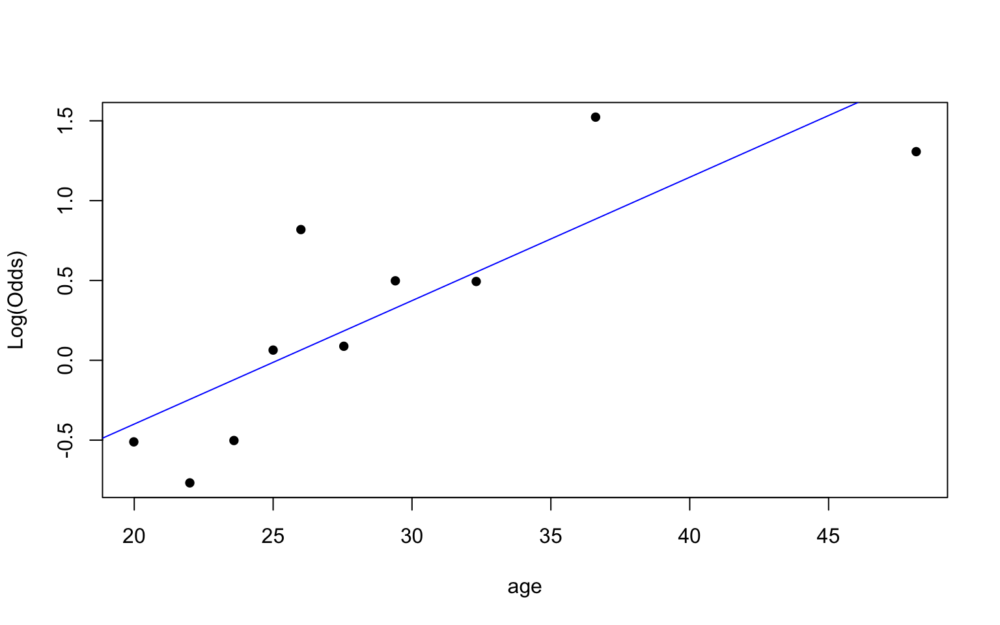
emplogitplot1(ppe_access ~ years, data = covid_df,
ngroups = 5)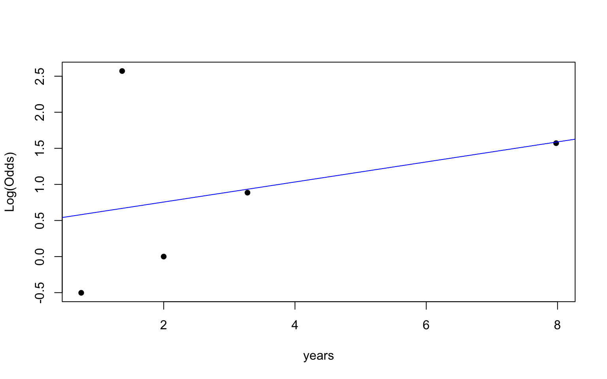
. . .
✅ The linearity condition is satisfied. There is generally a linear relationship between the empirical logit and the quantitative predictor variables
Checking randomness
We can check the randomness condition based on the context of the data and how the observations were collected.
Was the sample randomly selected?
If the sample was not randomly selected, the condition is still satisfied if the sample is representative of the population
. . .
✅ The randomness condition is satisfied. The paper states the participants were selected using simple random sampling at selected establishments. We can reasonably treat this sample as representative of the population.
Checking independence
We can check the independence condition based on the context of the data and how the observations were collected.
Independence is most often violated if the data were collected over time or there is a strong spatial relationship between the observations.
. . .
✅ We will treat this sample as independent. If given the data, we may want to further investigate potential correlation within an establishment.
Estimating \(\boldsymbol{\beta}\)
Estimating \(\boldsymbol{\beta}\)
Recall that the coefficients for logistic regression are estimated using maximum likelihood estimation.
\[ \begin{aligned}\log &L(\boldsymbol\beta | x_1, \dots, x_n, y_1, \dots, y_n) \\ &= \sum_{i=1}^n y_i \mathbf{x}_i^\mathsf{T} \boldsymbol\beta - \sum_{i=1}^n \log(1+ \exp\{\mathbf{x}_i^\mathsf{T} \boldsymbol{\beta}\}) \end{aligned} \]
Estimating \(\boldsymbol{\beta}\)
Take the derivative and set it equal to 0 to solve for \(\boldsymbol{\beta}\). (Click here for the full derivation.)
\[
\begin{aligned}
\frac{\partial \log L}{\partial \boldsymbol\beta} =\sum_{i=1}^n y_i \mathbf{x}_i^\mathsf{T}
&- \sum_{i=1}^n \frac{\exp\{\mathbf{x}_i^\mathsf{T} \boldsymbol\beta\} x_i^\mathsf{T}}{1+\exp\{\mathbf{x}_i^\mathsf{T} \boldsymbol\beta\}} = 0
\end{aligned}
\]
. . .
There is no closed form solution. We can find the solution numerically using the Newton-Raphson method.
Newton-Raphson method
Newton-Raphson is a numerical method for finding solutions to \(f(x) = 0\) . Steps of the Newton-Raphson method:
Start with an initial guess \(\theta^{(0)}\) .
For each iteration,
\[ \theta^{(t+1)} = \theta^{(t)} - \frac{f(\theta^{(t)})}{f^{\prime}(\theta^{(t)})} \]
Stop when the convergence criteria is satisfied.
Newton-Raphson method
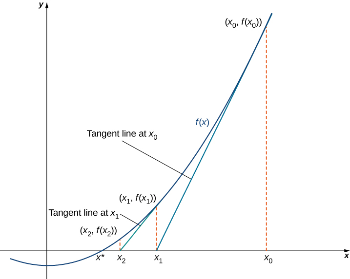
Image source: LibreTexts-Mathematics
Example
Let’s find the solution (root) of the function \[f(x) = x^3 - 20\]
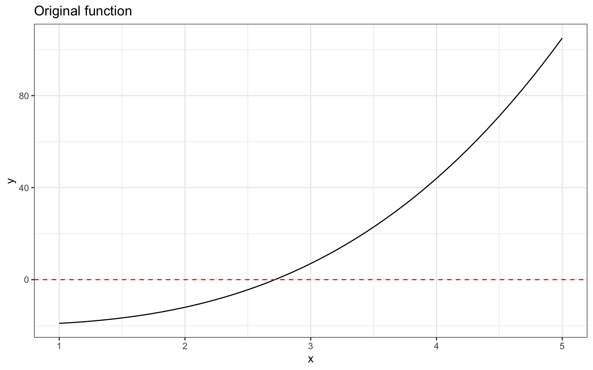
Example
Suppose the convergence criteria be \(\Delta = |\theta^{(t+1)} - \theta^{(t)}| < 0.001\) . We’ll start with an initial guess of \(\theta^{(0)} = 3\)
. . .
\[ \theta^{(1)} = 3 - \frac{3^3 - 20}{3*3^2} = 2.740741 \]
. . .
\[\Delta = |2.740741 - 3| = 0.259259 \]
. . .
\[ \theta^{(2)} = 2.740741 - \frac{2.740741^3 - 20}{3*2.740741^2} = 2.71467 \]
. . .
\[\Delta = |2.71467 - 2.740741| = 0.026071 \]
Example
\[ \theta^{(3)} = 2.71467 - \frac{2.71467^3 - 20}{3*2.71467^2} = 2.714418 \]
. . .
\[ \Delta = |2.714418 - 2.71467| = 0.000252 < 0.001 \]
The solution is \(\mathbf{\approx 2.714418}\)
Score vector & Hessian
Given parameter \(\boldsymbol{\theta} = [\theta_1, \ldots, \theta_p]^\mathsf{T}\) and log-likelihood, \(\log L (\boldsymbol{\theta}|\mathbf{X})\) , then
. . .
\[ \text{Score vector } =\nabla_{\boldsymbol{\theta}} \log L = \begin{bmatrix}\frac{\partial \log L}{\partial \theta_1} \\ \vdots \\ \frac{\partial \log L}{\partial \theta_p} \end{bmatrix} \]
\[ \text{Hessian} = \nabla^2_{\boldsymbol{\theta}} \log L = \begin{bmatrix}\frac{\partial^2 \log L}{\partial \theta_1^2} &\frac{\partial^2 \log L}{\partial \theta_1\theta_2} & \dots & \frac{\partial^2 \log L}{\partial \theta_1\theta_p} \\ \frac{\partial^2 \log L}{\partial \theta_2\theta_1} & \frac{\partial^2 \log L}{\partial \theta_2^2} & \dots & \frac{\partial^2 \log L}{\partial \theta_2\theta_p} \\ \vdots & \vdots & \dots & \vdots \\ \frac{\partial^2 \log L}{\partial \theta_p\theta_1} & \frac{\partial^2 \log L}{\partial \theta_p\theta_2} & \dots & \frac{\partial^2 \log L}{\partial \theta_p^2}\end{bmatrix} \]
Newton-Raphson for logistic regression
Start with an initial guess \(\boldsymbol{\beta}^{(0)}\) .
For each iteration,
\[ \boldsymbol{\beta}^{(t+1)} = \boldsymbol{\beta}^{(t)} - \big(\nabla_{\boldsymbol{\beta}}^2 \log L(\boldsymbol{\beta}^{(t)}|\mathbf{X})\big)^{-1}\big(\nabla_{\boldsymbol{\beta}} \log L(\boldsymbol{\beta}^{(t)}|\mathbf{X})\big) \]
Stop when the convergence criteria is satisfied.
Newton-Raphson for logistic regression
\[ \log L = \sum_{i=1}^n y_i \mathbf{x}_i^\mathsf{T} \boldsymbol\beta - \sum_{i=1}^n \log(1+ \exp\{\mathbf{x}_i^\mathsf{T} \boldsymbol{\beta}\}) \]
\[ \nabla_{\boldsymbol{\beta}} \log L = \sum_{i=1}^n \Bigg[y_i - \frac{\exp\{\mathbf{x}_i^\mathsf{T} \boldsymbol\beta\}}{1+\exp\{\mathbf{x}_i^\mathsf{T} \boldsymbol\beta\}}\Bigg]\mathbf{x}_i \]
\[ \nabla^2_{\boldsymbol{\beta}} \log L = \ - \sum_{i=1}^n \Big(\frac{1}{1+\exp\{\mathbf{x}_i^\mathsf{T} \boldsymbol\beta\}}\Big)\Big(\frac{\exp\{\mathbf{x}_i^\mathsf{T} \boldsymbol\beta\}}{1+\exp\{\mathbf{x}_i^\mathsf{T} \boldsymbol\beta\}}\Big)\mathbf{x}_i\mathbf{x}_i^\mathsf{T} \]
PPE access example
Questions from this week’s content?
References
Andualem, Atsedemariam, Belachew Tegegne, Sewunet Ademe, Tarikuwa Natnael, Gete Berihun, Masresha Abebe, Yeshiwork Alemnew, et al. 2022. “COVID-19 Infection Prevention Practices Among a Sample of Food Handlers of Food and Drink Establishments in Ethiopia.” PLoS One 17 (1): e0259851.